操作系统文件系统复习
磁盘有效化
一个磁盘要想真正变得有用，一般要按顺序经历以下的过程
- 物理格式化（低级格式化）：一般在磁盘出厂时进行，主要是给磁道划分扇区，排查错误扇区。
- 分区：由软件进行，比如FDISK
- 逻辑格式化（高级格式化）：建立文件系统
- 安装操作系统。
文件
定义
是指一组带标识（标识即为文件名）的、在逻辑上有完整意义的信息项的序列。
组成
文件体、文件说明
文件体
文件内容
文件说明
文件存储和管理的相关信息，比如文件名、文件内部标识、文件存储地址、访问权限、访问时间。
文件系统
数据结构
文件控制块(FCB)
定义
保存管理文件所需的所有有关信息（文件属性或元数据）
内容
- 基本信息：文件名、物理位置、文件逻辑结构、文件物理结构
- 访问控制信息：文件所有者、访问权限
- 使用信息：创建时间、上一次修改时间、当前使用信息。
文件逻辑结构
我们用户看到的文件表面上的行文结构，举一个这样的例子：
文件物理结构
连续结构
存放图示
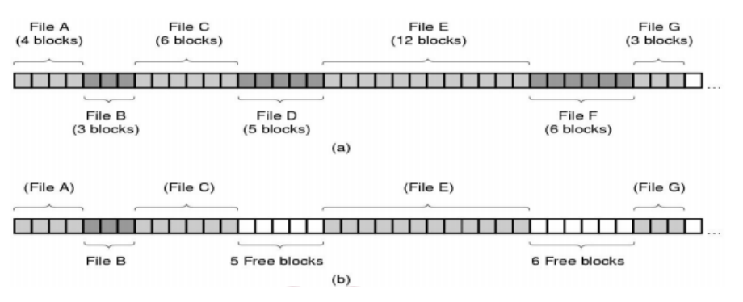
存取图示
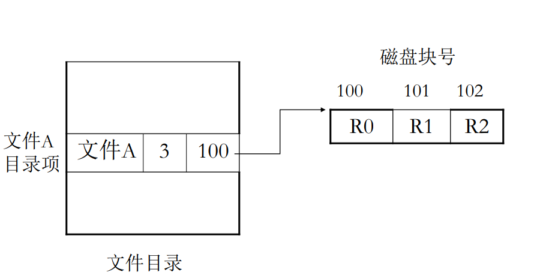
特点
- 结构简单，开销小
- 支持随机读取，速度快
- 连续存时速度快
- 文件长度不易改变
串联/链接文件结构
存放图示
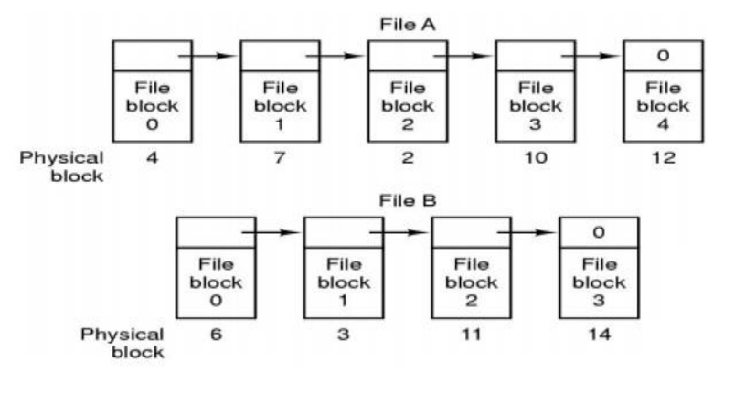存取图示
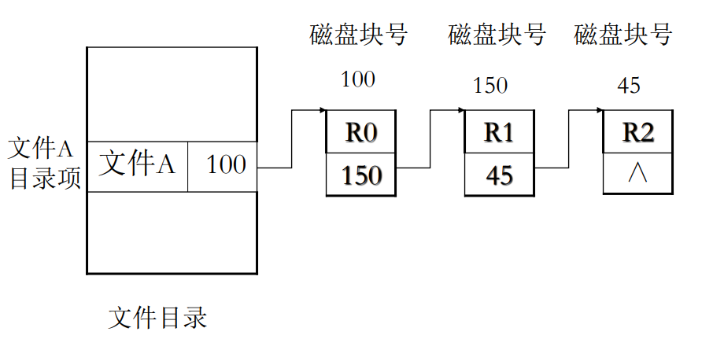特点
- 空间利用率高、较好利用辅存空间
- 文件动态扩充和修改容易
- 顺序存取效率高
- 不能随机访问
- 可靠性较差
- 指针本身占用空间
索引文件结构
存放图示
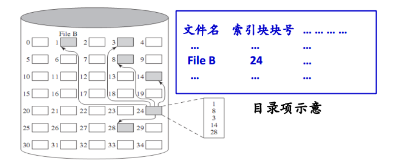存取图示
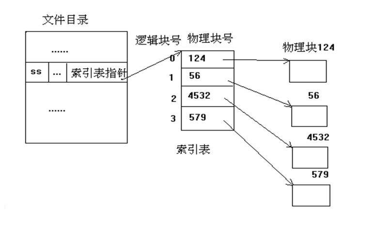注意事项
查索引文件需要访问内存两次，一次是查索引表、一次是查文件。特点
- 集中了链接文件和顺序文件的优点
- 本身带来了更大的系统开销（时间上、内存上）
组织形式
- 链接模式：一个盘块一个索引表、多个索引表链接起来
- 多级索引：将一个大文件的所有索引表（二级索引）的地址放在另一个索引表（一级索引）中
- 综合模式：直接索引方式与间接索引方式结合
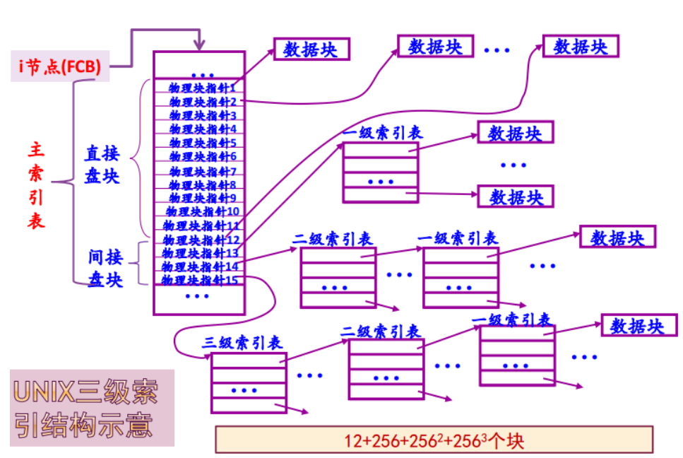
目录
实现
直接法
目录项＝文件名＋FCB
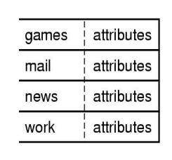
间接法
目录项＝文件名＋FCB的地址
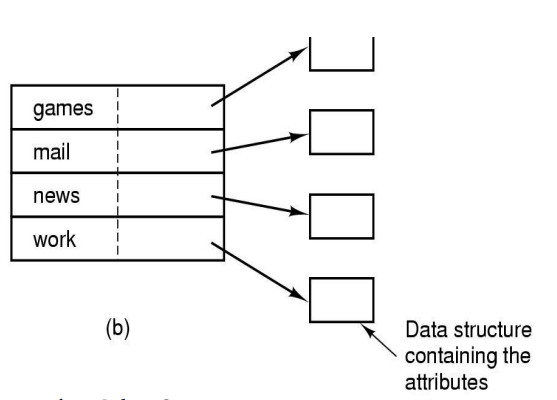
在这里，FCB的地址叫法也不太合适，因为FCB包含文件名，但显然文件名已经在目录项里了，这里准确的说法是i节点的地址。
文件名处理
由于实际需要，常常需要支持长文件名。
实现方法
- 在目录项中，将文件名的长度固定为255字符（但显然是不合理的，造成了大量的空间浪费）
- 目录项长度可变：目录项的长度不再固定，随具体存放内容而定。（回收时造成困难）
- 目录项长度固定，把长度不定的文件名统一放在目录文件的末尾
图示
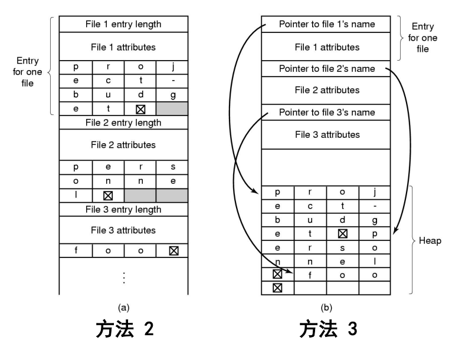
软/硬连接
总览
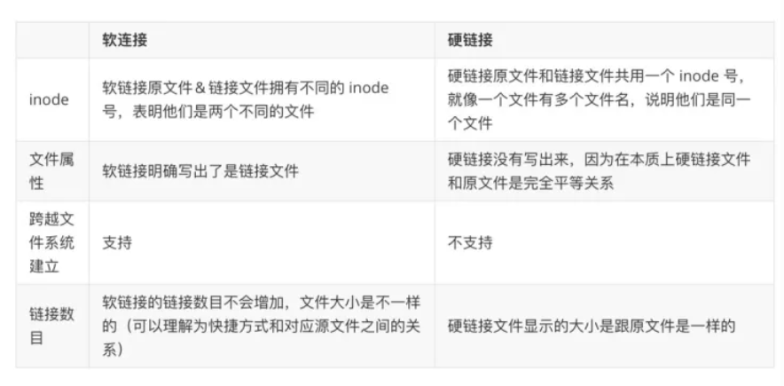
硬连接
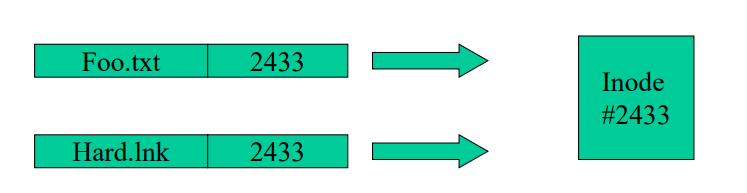
软连接
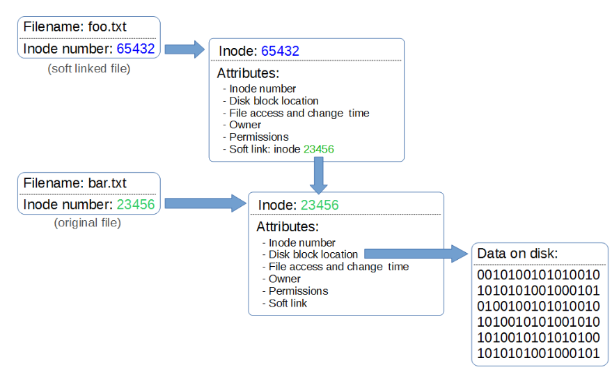
文件系统性能
方法
目录项（FCB）分解、当前目录、磁盘碎片整理、块高速缓存、磁盘调度、提前读取、合理分配磁盘空间、信息的优化分布、RAID技术等。
块高速缓存
定义
在内存中为磁盘块设置的一个缓冲区，保存了磁盘中某些块的副本。当对文件系统进行操作的时候，如果块在内存内可以直接访问，否则调入后再访问。
组织形式
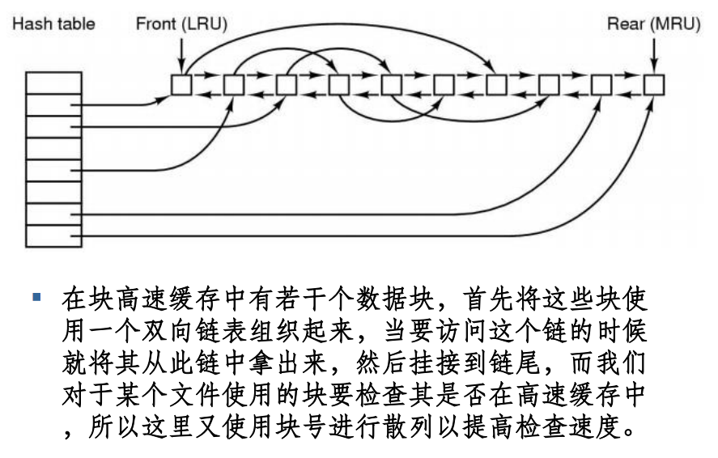
FCB分解法
适用于直接法存储目录项，将FCB割成两块，小块继续存在远处，大块由小块指针索引。
在这种情况下，如果要访问完整的FCB，需要在找到页目录项后再次访问一次磁盘把剩下的大块找全。
FAT12
FAT表项解析簇号
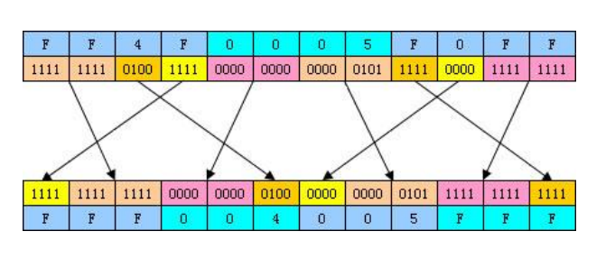
虚拟文件系统VFS
图示
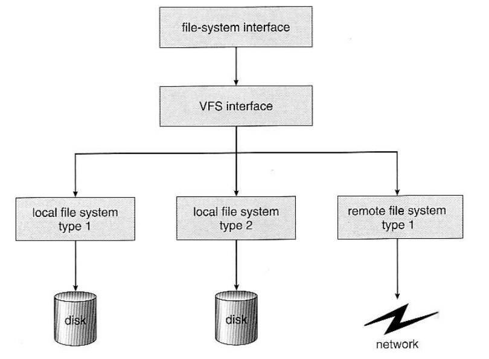
本博客所有文章除特别声明外，均采用 CC BY-NC-SA 4.0 许可协议。转载请注明来自 ForeverYolo的博客！
相关推荐


评论